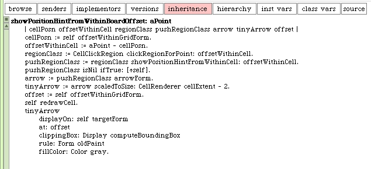

Back when we wrote code to detect the mouse events, particularly, while the button was up, we needed one more piece of code. You probably noticed that the update is not automatic when we move our mouse/cursor over one of our cells. We can remedy that by adding one line of code.
One the LaserGame class, modify this instance method:
mouseMoveWhileButtonUp: evt forMorph: aSketchMorph
| cell renderer pixelPositionWithinBoard |
cell := self cellForEvent: evt.
renderer := CellRenderer rendererFor: cell grid: self grid form: self boardForm.
pixelPositionWithinBoard := self boardRelativePositionFor: evt.
renderer showPositionHintFromWithinBoardOffset: pixelPositionWithinBoard.
self changed
We added one line of code. We added the "self changed" at the end. By doing this the update actions should happen whenever we enter one of our cells.
The drawing of the arrow will require that we repaint the background of our cell in, as well as its contents, each time we draw an arrow. This is evident when we move the cursor around in the cell and draw arrows in more than one direction, one after the other. Here's a version of code that solves much of the arrow drawing.
When we move the cursor around in the game board, over the mirror cells, we see different arrows.
This looks pretty good but it's obvious that we also need code to delete the arrow when we leave the cell. Actually, we should clean up when we leave the inside region. After all, we should only see arrows in the cell where our cursor presently is, and only then if it's a mirror cell and we are in one of the push regions. We'll want to take that cell background blanking and re-rendering code and extract it to its own method. We can then call it when we leave the cell.
We call this method from here...
